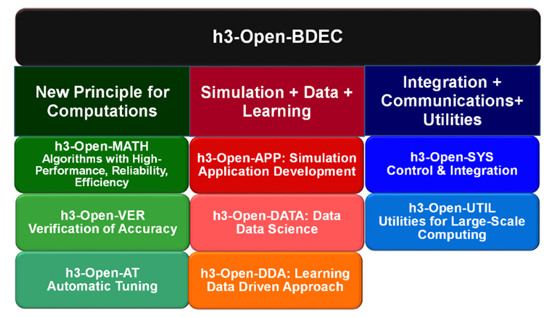

Overview
We propose an innovative method for sustainable promotion of scientific discovery using supercomputers in the Exascale Era by combining (Simulation + Data + Learning (S+D+L)). The Information Technology Center, The University of Tokyo (ITC/UTokyo) has been considering that integration of (S+D+L) is essential for establishment of Society 5.0, which is the super smart and human-centered society achieved by digital innovation, and by integration of cyber space and physical space. ITC/UTokyo has been planning to introduce the BDEC system (Big Data & Extreme Computing) as the platform for integration of (S+D+L). ITC/UTokyo decided to introduce the BDEC/Wisteria-01 System, which starts its operation in May 2021. The BDEC/Wisteria-01 is the first system of the BDEC platforms. It is a Hierarchical, Hybrid, Heterogeneous (h3) system, which consists of computing nodes for computational science (Odyssey, 7,680 nodes of Fujitsu PRIMEHPC FX1000 (A64FX)) and those for data science/machine learning (Aquarius, 45 nodes of Intel Xeon Ice Lake with 360 of NVIDIA A100 TensorCore GPU’s). Total peak performance is 33.1 PFLOPS with memory bandwidth of 8.38 PB/sec. We develop an innovative open-source software platform “h3-Open-BDEC” for integration of (S+D+L), and evaluate the effects of the integration on the Wisteria/BDEC-01. The h3-Open-BDEC is designed for extracting the maximum performance of the supercomputers with minimum energy consumption focusing on (1) innovative method for numerical analysis based on the new principle of computing by adaptive precision, accuracy verification and automatic tuning, and (2) Hierarchical Data Driven Approach (hDDA) based on machine learning. The hDDA automatically constructs the simplified models for efficient generation of training data using Feature Detection, MOR (Model Order Reduction), UQ (Uncertainty Quantification), Sparse Modeling and AMR (Adaptive Mesh Refinement). The h3-Open-BDEC is the first innovative software platform to realize integration of (S+D+L) on supercomputers in the Exascale Era, where computational scientists can achieve such integration without supports by other experts. This integration by h3-Open-BDEC enables significant reduction of computations and power consumptions, compared to those by conventional simulations. This work is supported by Japanese Government from FY.2019 to FY.2023 (JSPS Grant-in-Aid for Scientific Research (S), P.I.: Kengo Nakajima).
